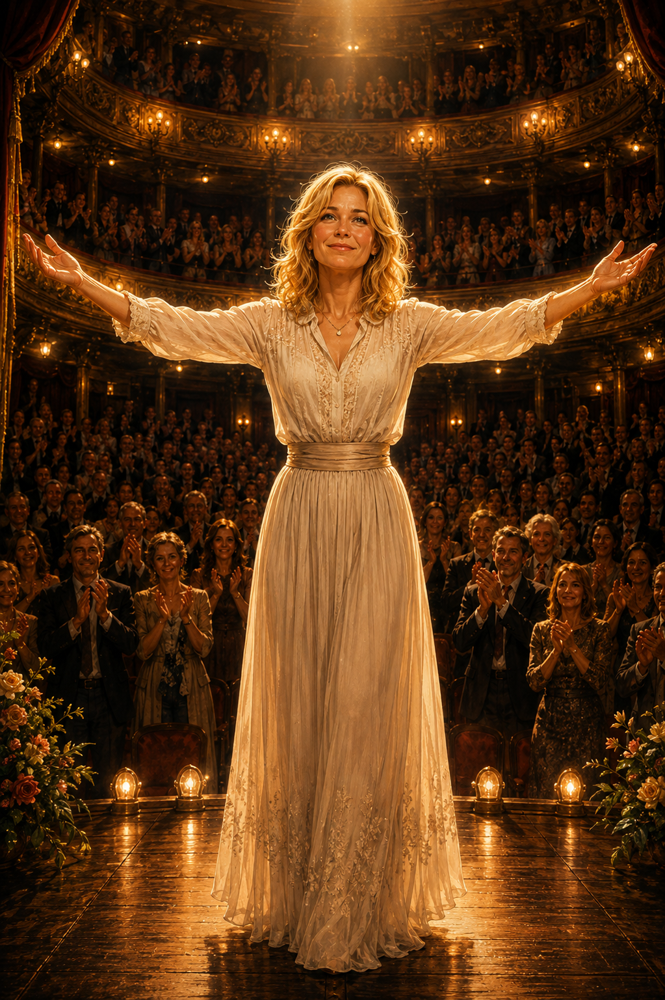

Once again we are reading rhymes which take pause for thought on our passionate
and secret, loving crimes.
And I can recant all the poetic forms of you, a fair and hypnotic Lady,
an Angel with grace, a loving soul mate
and of course that sweet, pretty and intelligent lady,
who can knock the spots off any witless man!
And what I love the most about our time together is the slow,
slow pace, in which we caress, kiss and leisurely take our bliss,
I am beholden as always to look upon your angel’s face,
to lightly stroke your silky taste and caress your sleek hair,
your poised and posed angular nose, your high cheek bones and fairy ears,
and lingering on your smooth neck with peppered, gentle kisses,
touched with a lullaby of lazy, pure adoring affections,
I also love to chase your slippery tongue,
with mine trying to wrap it into a velvet home,
and breathe your breath deep into my loving chest,
with your oxygen can I dream away a softly spoken afternoon,
with the ample flow of your milky creamy rose perfume glow,
And while in motion and moving around your loving responses,
I glance on your glassy, classy, warm, emotional eyes,
whose colour seems to triangulate with a tint of green,
a steel silver gray and a shimmer of blue,
and in that moment I wish to uncover the deep, deep,
sensual mystery of all your glory
and look long into your splendid soul,
and treasure the essence of you with a smile of infinity
and for which I can always recall to stave off my chills,
falling into a jubilant spin while in memory of you,
And as my passions race and I want to take you fast and quick,
with no physical mercy and I then take my dominant satisfaction,
but reserved I am, as natural is the way to embrace the moment,
for sure can I hold this time and space,
if by magic stop eternity in its tracks,
with frozen action will I capture your complete naked instinct in my mind’s eye,
Now sweeping my hands across your chest, and tummy flat,
do I contemplate the knotted end of your umbilical cord
and appreciate your broad pelvic girdle
and me thinks its a place to be and grow,
a comfortable space to afford any nine month holy term,
and a blessed start of all the lucky lives you have or will give birth too,
Then with hands aplomb do I fold over the smooth skin across your back,
and the curvy nether region which I can stroke and slap,
kiss and lick away at your sensitive base,
then to let my curious, fervent, fingertips loose to explore all of your inner wet excitement,
As all the emotion wells up and my thrills,
and love are all bundled into a diamond mine of feelings and ecstasy,
then I begin to moan and cry my love like the whimpering's of a little boy,
who has just found all his lost toys or a puppy dog which has found real joy,
Can you really think that you do not move me deep inside?
That all of this easy quality time is not a true expression of unconditional love?
I wish to move, slowly the fire within your soul and hope, pray that you will too,
and want to spend a forever and ever repeating our simple romantic kisses over and over again,
until at the edge of the universe we are in union locked, lovingly cooking our love to medium rare
or even - dare I say well done…